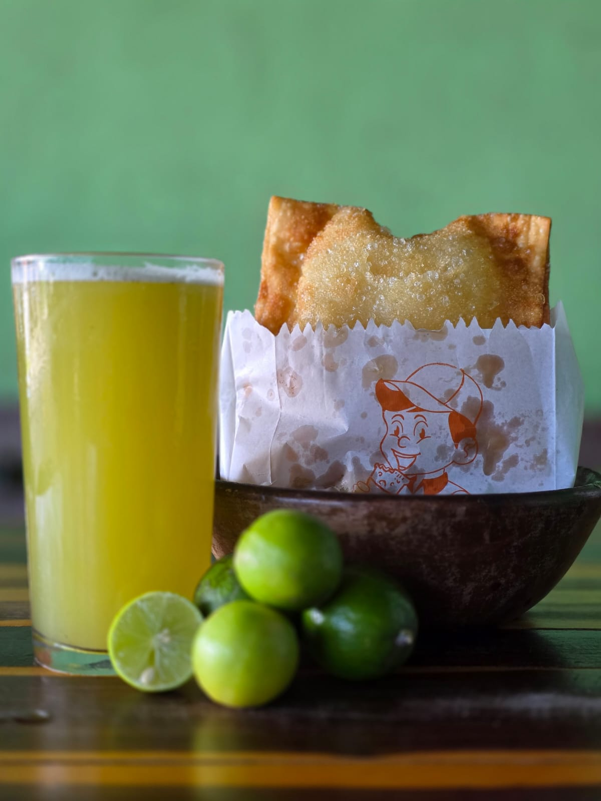
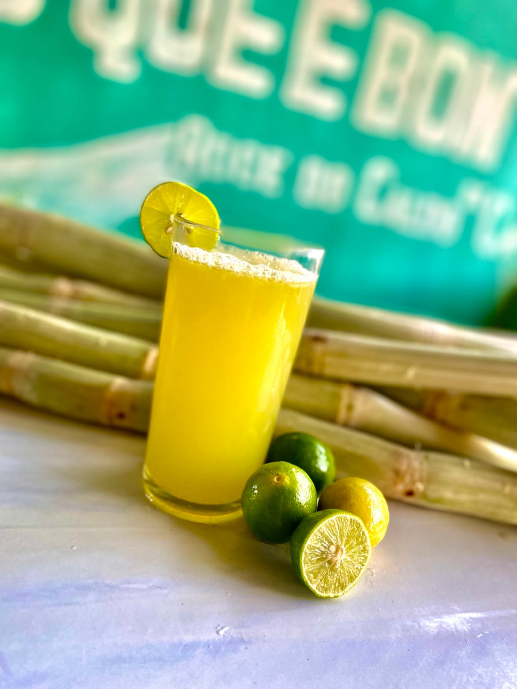

SOBRE NÓS
Desde 2013, o Roger o rei do Caldo de cana tem um
compromisso simples e poderoso:
Levar o melhor caldo de cana e o pastel mais fresquinho
para a mesa dos nossos clientes.
Sob o comando do Roger, construímos uma história baseada na confiança e na seleção rigorosa de cada ingrediente que chega até você.
Nossa essência vem de Pacatuba. Valorizamos quem planta e colhe em nossa terra, por isso compramos nossa cana diretamente dos produtores da região.
O resultado? Um caldo de cana fresquinho, e moído na hora,
mantendo todo o sabor e as propriedades naturais da planta.
Nossos Sabores ou produtos ?
Natural
Com Limão
Garrafa de 1L
Garrafa de 2L
Garrafa de 500ML
Caldo de Cana com Pastel
Caldo de Cana com Risoles
Onde Estamos Localizados

R. Vicente Ferrer De Lima, 1038
Pacatuba - CE